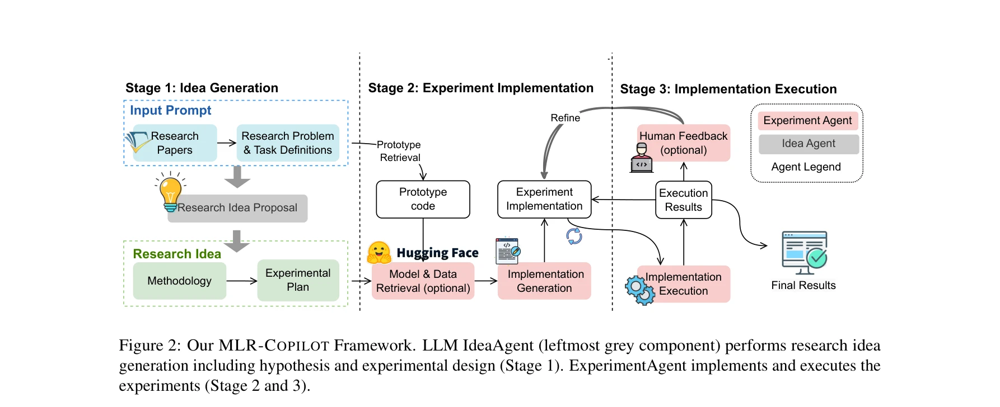

저자: Ruochen Li, Teerth Patel, Qingyun Wang, Xinya Du | 날짜: 2024 | URL: https://arxiv.org/abs/2408.14033

Figure 2: Our MLR-COPILOT Framework. LLM IdeaAgent (leftmost grey component) performs research idea
MLR-COPILOT는 LLM 에이전트 기반의 자동화된 머신러닝 연구 프레임워크로, 아이디어 생성부터 실험 구현 및 실행까지 전 과정을 자동화한다.
Figure 2: Our MLR-COPILOT Framework. LLM IdeaAgent (leftmost grey component) performs research idea
Figure 2: Our MLR-COPILOT Framework. LLM IdeaAgent (leftmost grey component) performs research idea
총평: MLR-COPILOT는 LLM 에이전트를 활용하여 ML 연구의 전 과정을 자동화하는 혁신적인 프레임워크로, RL 기반 미세조정과 인간-기계 협업 메커니즘을 통해 고품질의 자동화 연구를 실현한다. 다만 평가 범위 확대, 성공률 분석, 실용적 효율성 지표 제시 등의 보완이 필요하다.